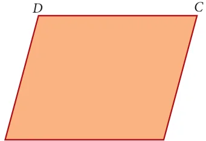
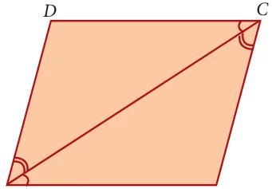
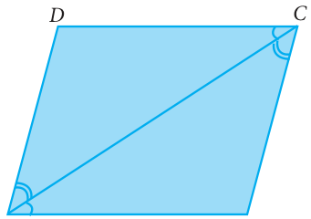
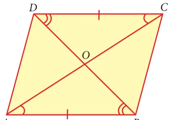
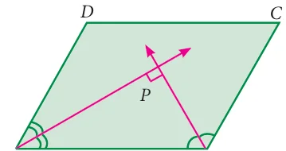
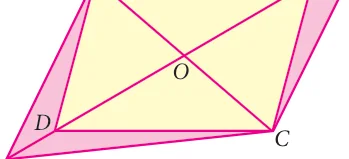

Activity 2
North Four Tamil Nadu State Transport buses take
South Thiruvallur the following routes. The first is a one-way
West East
Vellore RanipetKanchipuram journey, and the rest are round trips. Find the
Chennai
Krishnagiri Tirupattur Thiruvannamalai places on the map, put points on them and Dharmapuri Villupuram connect them by lines to draw the routes. The
Chengalpattu
Salem places connecting four different routes are
kallakurichi
Nilgiris Namakkal given as follows.
The Erode Cuddalore
Perambalur Ariyalur Mayiladuthurai
Coimbatore Tiruppur Karur TiruchirappalliThanjavur (i) Kanniyakumari, Tirunelveli, Virudhunagar,
Thiruvarur
Nagapattinam Madurai
Dindigul Pudukkottai
- (ii)Sivagangai, Puthukottai, Thanjavur,
Theni Madurai Sivagangai
Virudhunagar Ramnathapuram
- (iii)Erode, Coimbatore, Dharmapuri, Karur,
Tenkasi Thoothukudi
SRILANKA
- (iv)Chennai, Cuddalore, Krishnagiri,
Tirunelveli
Map not to Scale Vellore, Chennai
Kanniyakumari
Fig. 4.15
You will get the following shapes.

Label the vertices with city names, draw the shapes exactly as they are shown on the map without rotations. We observe that the first is a single line, the four points are collinear. The other three are closed shapes made of straight lines, of the kind we have seen before. We need names to call such closed shapes, we will call them polygons from now on.

How do polygons look? They have sides, with points at either end. We call these points as vertices of the polygon. The sides are line segments joining the vertices. The word poly stands for many, and a polygon is a many-sided figure.
How many sides can a polygon have? One? But Note that is just a line segment. Two ? But how can you Concave polygon: Polygon having any get a closed shape with two sides? Three? Yes, and one of the interior angle greater than 180o this is what we know as a triangle. Four sides?
Convex Polygon: Polygon having each
_{o} Squares and rectangles are examples of polygons
interior angle less than 180
(Diagonals should be inside the polygon)
4.3.1 Special Names for Some Quadrilaterals
- 1.A parallelogram is a quadrilateral in which opposite sides are parallel and equal.
- 2.A rhombus is a quadrilateral in which opposite sides are parallel and all sides are
equal.
- 3.A trapezium is a quadrilateral in which one pair of opposite sides are parallel.
Draw a few parallellograms, a few rhombuses (correctly called rhombii, like cactus and cactii) and a few trapeziums (correctly written trapezia).

The great advantage of knowing properties of quadrilateral is that we can see the relationships among them immediately. Â Every parallelogram is a trapezium, but not necessarily the other way. Â Every rhombus is a parallelogram, but not necessarily the other way. Â Every rectangle is a parallelogram, but not necessarily the other way. Â Every square is a rhombus and hence every square is a parallelogram as well. For “not necessarily the other way” mathematicians usually say “the converse is not true”. A smart question then is: just when is the other way also true? For instance, when is a parallelogram also a rectangle? Any parallelogram in which all angles are also equal is a rectangle. (Do you see why?) Now we can observe many more interesting properties. For instance, we see that a rhombus is a parallelogram in which all sides are also equal.
Note
You know bi-cycles and tri-cycles? When we attach bi or tri to the front of any word, they stand for 2 (bi) or 3 (tri) of them. Similarly quadri stands for 4 of them. We should really speak of quadri-cycles also, but we don’t. Lateral stands for sideways, thus quadrilateral means a 4-sided figure. You know trilaterals; they are also called triangles ! After 4 ? We have: \(5 -\) penta, \(6 -\) hexa, \(7 -\) hepta, \(8 -\) octa, \(9 -\) nano, \(10 -\) deca. Conventions are made by history. Trigons are called triangles, quadrigons are called quadrilaterals. Continuing in the same way we get pentagons, hexagons, heptagons, octagons, nanogons and decagons. Beyond these, we have 11-gons, 12-gons etc. Perhaps you can draw a 23-gon!
4.3.2 More Special Names
When all sides of a quadrilateral are equal, we call it equilateral. When all angles of a quadrilateral are equal, we call it equiangular. In triangles, we discussed that equilateral triangles as those with all sides equal. Now we can call them equiangular triangles as well!

Here are two more special quadrilaterals, called kite and isosceles trapezium.

4.3.3 Types of Quadrilaterals
Quadrilateral Answer the following question.
- (i)Are the opposite angles of a rhombus equal?
- (ii)A quadrilateral is a ______________ if a
pair of opposite sides are equal and parallel. kite trapezium (iii) Are the opposite sides of a kite equal?
- (iv)Which is an equiangular but not an
parallelogram (v) Which is an equilateral but not an equiangular parallelogram?
- (vi)Which is an equilateral and equiangular
rectangle parallelogram?
- (vii)__________ is a rectangle, a rhombus and a
square
Fig. 4.23
Activity 3
Step \(- 1\): Cut out four different quadrilaterals from coloured glazed papers.
Fig. 4.24
Step \(- 2\): Fold the quadrilaterals along their respective diagonals. Press to make creases. Here, dotted line represent the creases.
Fig. 4.25
Step \(- 3\): Fold the quadrilaterals along both of their diagonals. Press to make creases.
Fig. 4.26
We observe that two imposed triangles are congruent to each other. Measure the lengths of portions of diagonals and angles between the diagonals.
Also do the same for the quadrilaterals such as Trapezium, Isosceles Trapezium and Kite. From the above activity, measure the lengths of diagonals and angles between the diagonals and record them in the table below:

Activity 4
Angle sum for a polygon D
Draw any quadrilateral ABCD.
Mark a point P in its interior.
Join the segments PA, PB, PC and PD.
You have 4 triangles now.
How much is the sum of all the angles of the 4 triangles? B Fig. 4.27 How much is the sum of the angles at P?
Can you now find the ‘angle sum’ of the quadrilateral ABCD?
Can you extend this idea to any polygon?
Thinking Corner
- 1.If there is a polygon of n sides (n \(\ge 3)\), then the sum of all interior angles is
(n \(- 2)\) # \(180 ^{\circ}\)
- 2.For the regular polygon (All the sides of a polygon are equal in size)
 Each interior angle is ^ n h # \(180 ^{\circ}\)
\(n - 2\)
 Each exterior angle is \(\frac{360c}{n}\)
 The sum of all the exterior angles formed by producing the sides of a convex polygon in the order is \(360 ^{\circ}\) .
 If a polygon has ‘n’ sides , then the number of diagonals of the polygon is
\(\frac{nn-3}{2}\) ^ h
4.3.4 Properties of Quadrilaterals

Note
- (i)A rectangle is an equiangular parallelogram.
- (ii)A rhombus is an equilateral parallelogram.
- (iii)A square is an equilateral and equiangular parallelogram.
- (iv)A square is a rectangle , a rhombus and a parallelogram.
Progress Check
- 1.State the reasons for the following.
- (i)A square is a special kind of a rectangle.
- (ii)A rhombus is a special kind of a parallelogram.
- (iii)A rhombus and a kite have one common property.
- (iv)A square and a rhombus have one common property.
- 2.What type of quadrilateral is formed when the following pairs of congruent triangles
are joined together?
- (i)Equilateral triangle.
- (ii)Right angled triangle.
- (iii)Isosceles triangle.
- 3.Identify which ones are parallelograms and which are not.
- (i)(ii) (iii)
- (iv)(v) (vi)
- 4.Which ones are not quadrilaterals?
- (i)(ii) (iii) (iv)
- (v)(vi) (vii) (viii)
- 5.Identify which ones are trapeziums and which are not.
- (i)(ii) (iii)
- (iv)(v) (vi)
4.3.5 Properties of Parallelogram
We can now embark on an interesting journey. We can tour among lots of quadrilaterals, noting down interesting properties. What properties do we look for, and how do we know they are true?
For instance, opposite sides of a parallelogram are parallel, but are they also equal? We could draw any number of parallelograms and verify whether this is true or not. In fact, we see that opposite sides are equal in all of them. Can we then conclude that opposite sides are equal in all parallelograms? No, because we might later find a parallelogram, one which we had not thought of until then, in which opposite sides are unequal. So, we need an argument, a proof.

Consider the parallelogram ABCD in the given Fig. 4.28. We believe that \(AB = CD\) and \(AD = BC\), but how can we be sure? We know triangles and their properties. So we can try and see if we can use that knowledge. But we don’t have any triangles in the parallelogram ABCD.

This is easily taken care of by joining AC. (We could equally well have joined BD, but let it be AC for now.) We now have 2 triangles ADC and ABC with a common side AC. If we could somehow prove that these two triangles are congruent, we would get \(AB = CD\) and \(AD = BC\), which is what we want!
Is there any hope of proving that DADC and DABC are congruent? There are many criteria for congruence, it is not clear which one is relevant here.
So far we have not used the fact that ABCD is a parallelogram at all. So we need to use the facts that AB<DC and AD<BC to show that DADC and DABC are congruent. From sides being parallel we have to get into some angles being equal. Do we know any such properties? we do, and that is all about transversals!
Now we can see it clearly. AD<BC and AC is a transversal, hence \(+DAC = +BCA\). Similarly, AB<DC, AC is a transversal, hence \(+BAC = +DCA\). With AC as common side, the ASA criterion tells us that DADC and DABC are congruent, just what we needed. From this we can conclude that \(AB = CD\) and \(AD = BC\).
Thus opposite sides are indeed equal in a parallelogram. The argument we now constructed is written down as a formal proof in the following manner.
Theorem 1
In a parallelogram, opposite sides are equal

Given ABCD is a parallelogram To Prove AB=CD and DA=BC Construction Join AC
Proof
Since ABCD is a parallelogram AD<BC and AC is the transversal
\(DAC = BCA \to (1)\) (alternate angles are equal) AB<DC and \(AC \angle\) is the transversal \(\angle\)
\(BAC = DCA \to (2)\) (alternate angles are equal) In ΔADC and Δ \(\angle CBA \angle\)
\(DAC = BCA\) from (1) AC is common \(\angle \angle\)
\(DCA = BAC\) from \((2) \angle\) ΔADC b Δ \(\angle CBA\) (By ASA) Hence \(AD = CB\) and \(DC = BA\) (Corresponding sides are equal) Along the way in the proof above, we have proved another property that is worth recording as a theorem.
Theorem 2
Notice that the proof above established that \(DAC = BCA\) and \(BAC = DCA\). Hence we also have, in the figure above, \(\angle \angle \angle \angle\) But we know that: \(\angle BCA + \angle BAC = \angle DCA + \angle DAC\)
A diagonal of a parallelogram divides it into two congruent triangles.

\(B + BCA + BAC = 180\) and \(\angle D + \angle DCA + \angle DAC = 180\) Therefore we must have that \(\angle \angle \angle B = D\). Fig. 4.31 With a little bit of work, proceeding similarly, we could have shown that \(\angle \angle A = C\) as well. Thus we have managed to prove the following theorem: \(\angle \angle\)
Theorem 3
The opposite angles of a parallelogram are equal. Now that we see congruence of triangles as a good “strategy”, we can look for more triangles. Consider both diagonals AC and DB. We already know that DADC and DCBA are congruent. By a similar argument we can show that DDAB and DBCD are congruent as well. Are there more congruent triangles to be found in this figure?

Yes. The two diagonals intersect at point O. We now see 4 new DAOB, DBOC, DCOD and DDOA. Can you see any congruent pairs among them? Since AB and CD are parallel and equal, one good guess is that ΔAOB and ΔCOD are congruent. We could again try Fig. 4.32 the ASA crierion, in which case we want \(OAB = OCD\) and \(ABO = CDO\). But the first of these follows from the fact that \(\angle \angle CAB = ACD\) (which we already established) and observing that \(\angle \angle CAB\) and OAB are the same (and \(\angle \angle\) so also OCD and ACD). We now use the fact that \(\angle BD\) is a transversal to get that \(\angle ABD = \angle CDB\), but then \(\angle ABD\) is the same as ABO, CDB is the same as CDO, and we are done. \(\angle \angle \angle \angle \angle \angle\) Again, we need to write down the formal proof, and we have another theorem.
Theorem 4
The diagonals of a parallelogram bisect each other. It is time now to reinforce our concepts on
parallelograms. Consider each of the given  Each pair of its opposite sides are parallel.  Each pair of opposite sides is equal.
statements, in the adjacent box, one by one.
Identifiy the type of parallelogram which
satisfies each of the statements. Support
your answer with reason.
Now we begin with lots of interesting properties equal. of parallelograms. Can we try and prove some  The diagonals are perpendicular bisectors property relating to two or more parallelograms? of each other. A simple case to try is when two parallelograms  Each pair of its consecutive angles is
share the same base, as in Fig.4.33

We see parallelograms ABCD and ABEF are on the common base AB. At once we can see a pair of triangles for being congruent DADF and DBCE. We already have that \(AD = BC\) and \(AF = BE\). But then since AD<BC and
as the angle formed by BC tand BE. Therefore \(DAF = CBE\). Thus DADF and DBCE are congruent. \(\angle \angle\) That is an interesting observation; can we infer anything more from this ? Yes, we know that congruent triangles have the same area. This makes us think about the areas of the parallelograms ABCD and ABEF.
Area of \(ABCD =\) area of quadrilateral \(ABED +\) area of DBCE
= area of quadrilateral \(ABED +\) area of \(DADF =\) area of ABEF
Thus we have proved another interesting theorem:
Theorem 5:
Parallelograms on the same base and between the same parallels are equal in area. In this process, we have also proved other interesting statements. These are called Corollaries, which do not need separate detailed proofs.
Corollary 1: Triangles on the same base and between the same parallels are equal in area. Corollary 2: A rectangle and a parallelogram on the same base and between the same parallels are equal in area.
These statements that we called Theorems and Corollaries, hold for all parallelograms, however large or small, with whatever be the lengths of sides and angles at vertices.
In a parallelogram ABCD, the bisectors of the consecutive angles A and B insersect at P. Show that \(APB = 90 ^{\circ}\) Solution \(\angle \angle \angle ABCD\) is a parallelogram AP and BP are bisectors of consecutive angles A and B. Fig. 4.34 Since the consecutive angles of a parallelogram are \(\angle \angle\) supplementary

\(\frac{1}{2} A \angle + \frac{1}{2} \angle B = \frac{180}{2}\)
( \(\angle PAB + \angle PBA = 90 ^{\circ}\)
\(A + B = 180 ^{\circ}\)

In ΔAPB, \(\angle \angle\)
\(PAB + APB + PBA = 180 ^{\circ}\) (angle sum property of triangle) \(\angle \angle \angle APB = 180 ^{\circ} -\) [ \(PAB +\) PBA]
\(\angle = 180 ^{\circ} - 90 \angle ^{\circ} = 90 ^{\circ} \angle\)
Hence Proved.


In the Fig.4.35 ABCD is a parallelogram, P and Q are the mid- points of sides AB and DC respectively. Show that APCQ is a parallelogram.
Solution Fig. 4.35
Since P and Q are the mid points of
AB and DC respectively Therefore \(AP = \frac{1}{2} AB\) and
\(QC = \frac{1}{2} DC (1)\)
But \(AB = DC\) (Opposite sides of a parallelogram are equal)
( \(\frac{1}{2} AB = 2 DC\) ( \(AP = \frac{1}{QC} (2)\)
Also , AB || DC
( AP || QC (3) [a ABCD is a parallelogram] Thus , in quadrilateral APCQ we have \(AP= QC\) and AP || QC [from (2) and ( 3)] Hence , quadrilateral APCQ is a parallelogram.

ABCD is a parallelogram Fig.4.36 such that \(BAD = 120\) and AC bisects BAD show that ABCD is a rhombus. \(\angle \angle\)
\(\angle BAC = \frac{1}{2}\) # \(120 ^{\circ} = 60 ^{\circ} \angle 1 = \angle 2 = 60 ^{\circ}\)
Solution
Given \(BAD = 120 ^{\circ}\) and AC bisects BAD

AD || BC and \(\angle AC \angle\) is the traversal Fig. 4.36
Δ ABC is isosceles triangle \(\angle \angle\) [a \(1 = 4 = 60 ^{\circ}\) ] ( \(AB = BC \angle \angle\) Parallelogram ABCD is a rhombus.
\(2 = 4 = 60 ^{\circ}\)

In a parallelogram ABCD , P and Q are the points on line DB such that \(PD = BQ\) show that APCQ is a parallelogram
Solution
ABCD is a parallelogram.
\(OA = OC\) and \(OB = OD\) (aDiagonals bisect each other)
now \(OB + BQ = OD + DP\)

\(OQ = OP\) and \(OA = OC\)
APCQ is a parallelogram.

- 1.The angles of a quadrilateral are in the ratio 2 : 4 : 5 : 7. Find all the angles.
angles are \(2x - 10\) and \(x + 4\). Find the value of \(\angle \angle x\) and the measure of all the angles. \(\angle\)
- 2.In a quadrilateral ABCD, \(A = 72 ^{\circ}\) and C is the supplementary of A. The other two
find \(OBC \angle\)
- 4.The lengths of the diagonals of a Rhombus are 12 cm and 16 cm . Find the side of the \(\angle\)
- 3.ABCD is a rectangle whose diagonals AC and BD intersect at O. If \(OAB =46 ^{\circ}\) ,
rhombus.
- 5.Show that the bisectors of angles of a parallelogram form a rectangle .
- 6.If a triangle and a parallelogram lie on the same base and between the same parallels,
then prove that the area of the triangle is equal to half of the area of parallelogram.
- 7.Iron rods a, b, c, d,

e, and f are making a design in a bridge as shown in the figure. If a || b , c || d , e || f , find the marked angles between
- (i)b and c
- (ii)d and e
(iii d and f
- (iv)c and f Fig. 4.38